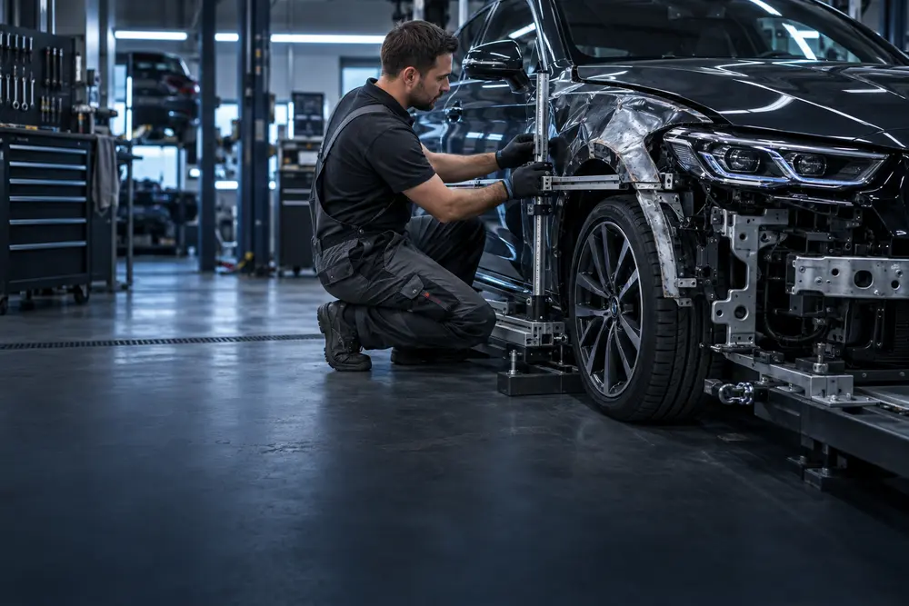
Unfallinstandsetzung
Vom Parkrempler bis zum strukturellen Karosserieschaden – fachgerecht und zeitwertgerecht instandgesetzt.
Anfrage stellen →Karosserie & Lack · Landshut & München
Wir sprechen auch Russisch · Мы говорим по-русски
Jetzt anrufen+49 (0) 871 319 4125Lackiererei, Karosserie & KFZ‑WerkstattAlles aus einer Hand.
Von der kleinsten Delle bis zum Richtbankschaden – von Diagnose und Wartung bis zur kompletten Reparatur: Wir bringen Ihr Fahrzeug präzise, termintreu und zuverlässig zurück auf die Straße.
Abhol- & BringserviceKeine Zeit für Werkstattwege? Wir holen Ihr Fahrzeug ab – und bringen es fertig zurück. ↗Modernste Technik, handwerkliche Präzision und ein erfahrenes Team – für Ergebnisse, die nicht nur repariert, sondern wie neu aussehen.

Vom Parkrempler bis zum strukturellen Karosserieschaden – fachgerecht und zeitwertgerecht instandgesetzt.
Anfrage stellen →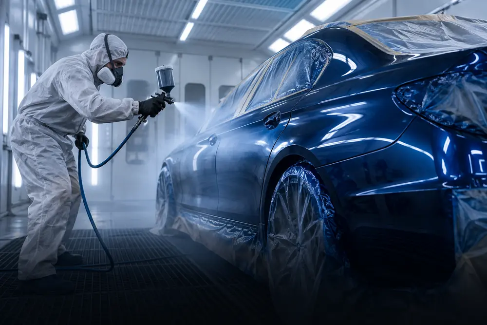
Teil- und Komplettlackierungen, präzise Farbabstimmung sowie Effektlackierungen und Airbrush.
Mehr erfahren →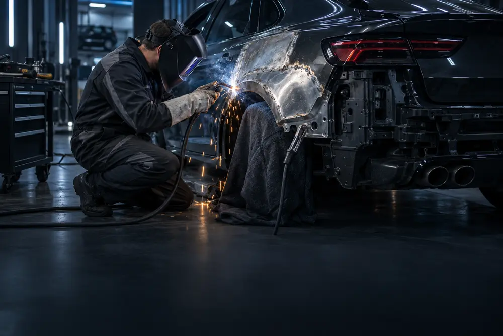
Ausbeulen, Richten und Feinblecharbeiten – auch für Transporter, Sonderaufbauten und Classic Cars.
Mehr erfahren →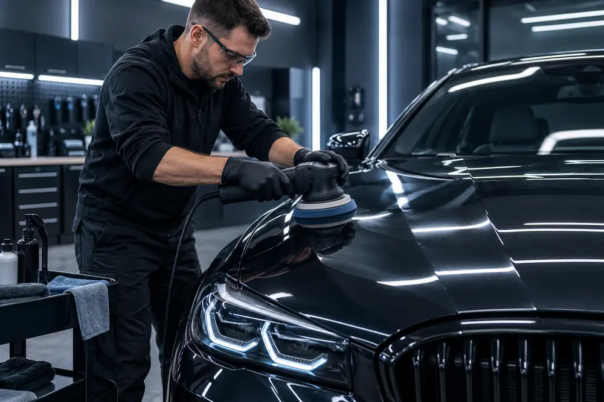
Professionelle Politur und Aufbereitung für neuen Tiefenglanz und langfristigen Werterhalt.
Mehr erfahren →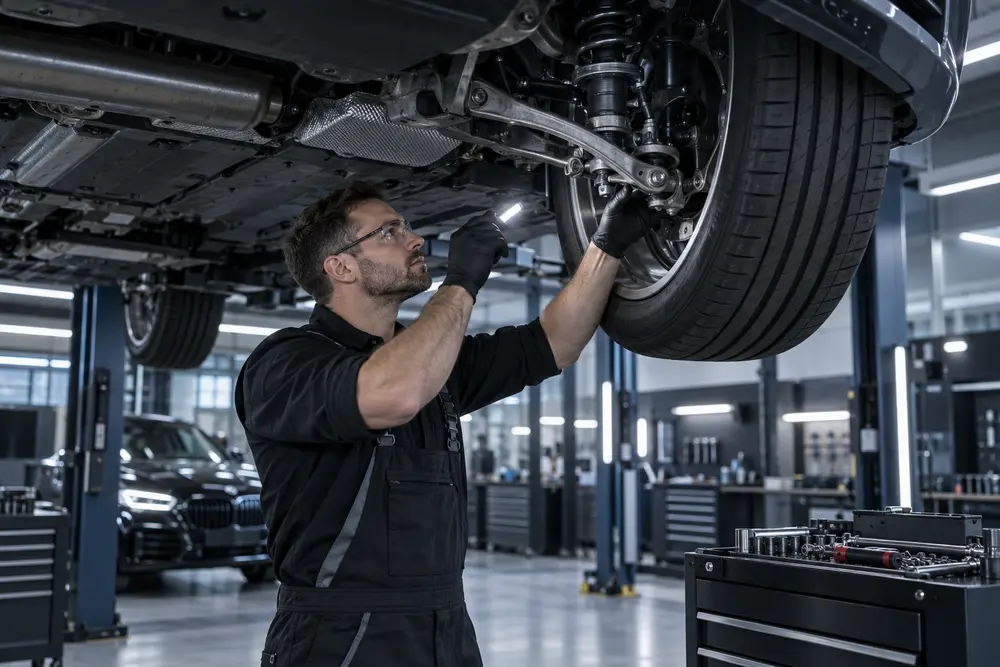
Professionelle Wartung, Diagnose und Reparatur für einen sicheren und zuverlässigen Fahrzeugbetrieb.
Mehr erfahren →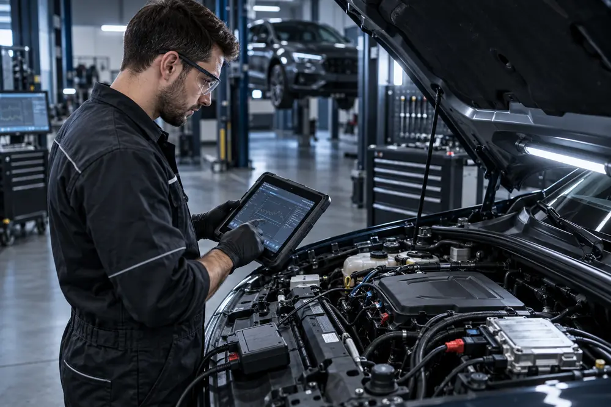
Moderne Fehlerdiagnose und fachgerechte Reparatur elektronischer Fahrzeug- und Motorsysteme.
Mehr erfahren →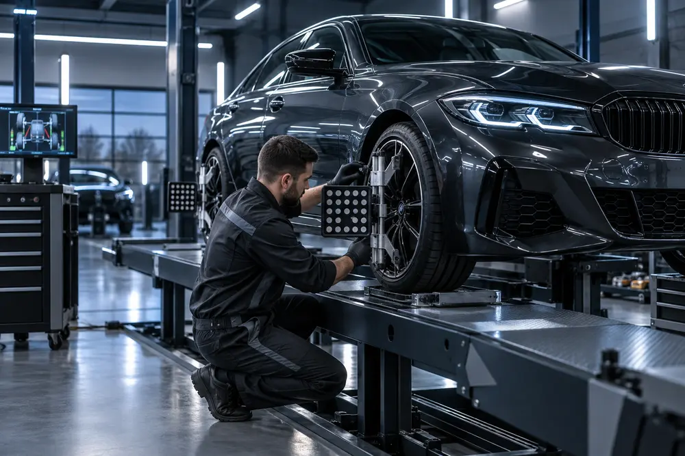
Präzise Vermessung und Einstellung für sauberen Geradeauslauf und gleichmäßigen Reifenverschleiß.
Mehr erfahren →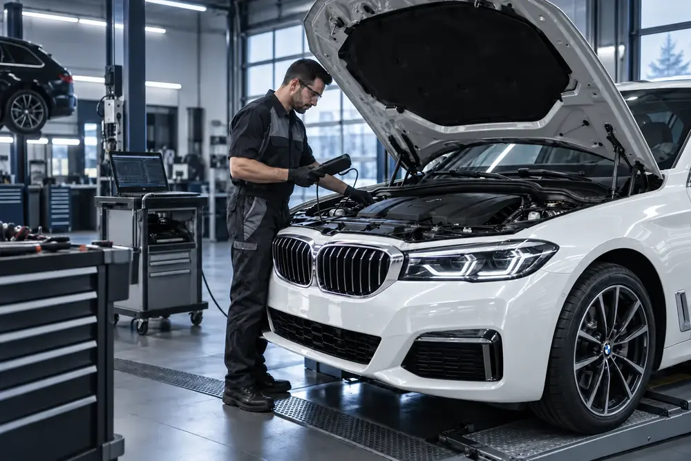
Vorbereitung und Organisation der Haupt- und Abgasuntersuchung – unkompliziert aus einer Hand.
Mehr erfahren →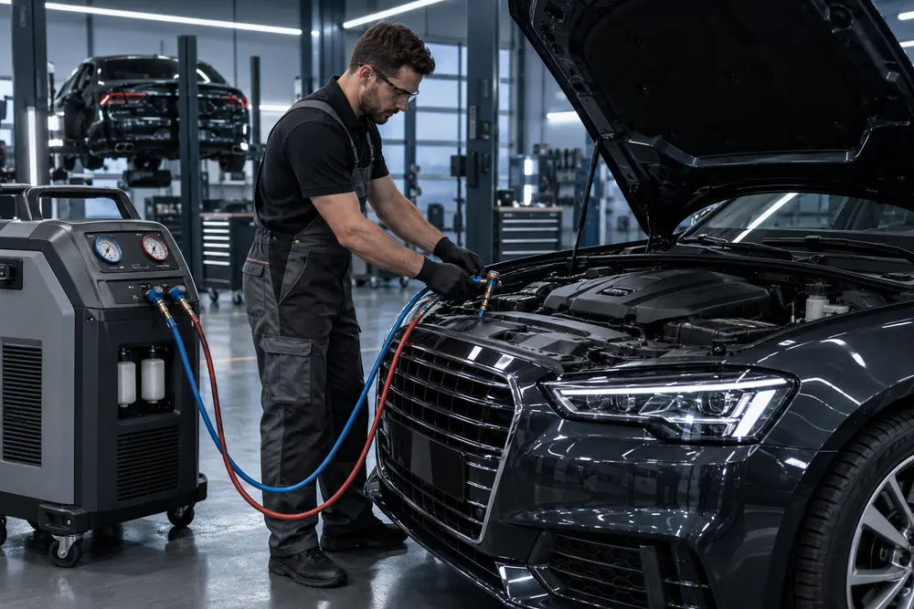
Prüfung, Wartung und Befüllung für zuverlässige Kühlung und angenehmes Klima im Fahrzeug.
Mehr erfahren →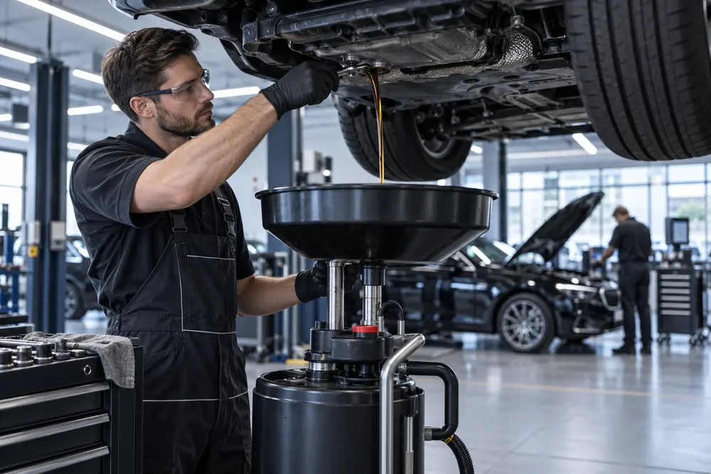
Motoröl- und Filterwechsel mit passenden Qualitätsprodukten für dauerhaften Motorschutz.
Mehr erfahren →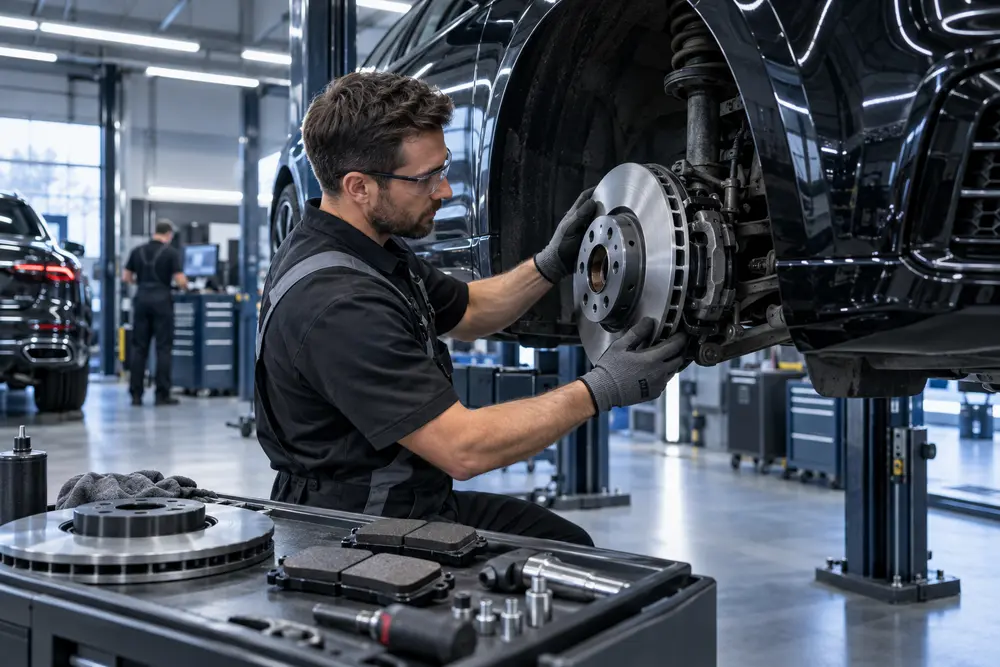
Kontrolle und Austausch von Bremsbelägen, Bremsscheiben und weiteren Komponenten.
Mehr erfahren →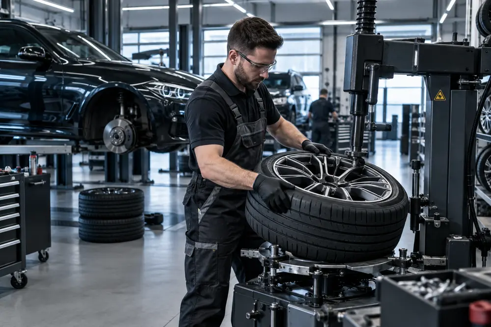
Reifenwechsel, Auswuchten und Felgenservice für sicheren Kontakt zur Straße.
Mehr erfahren →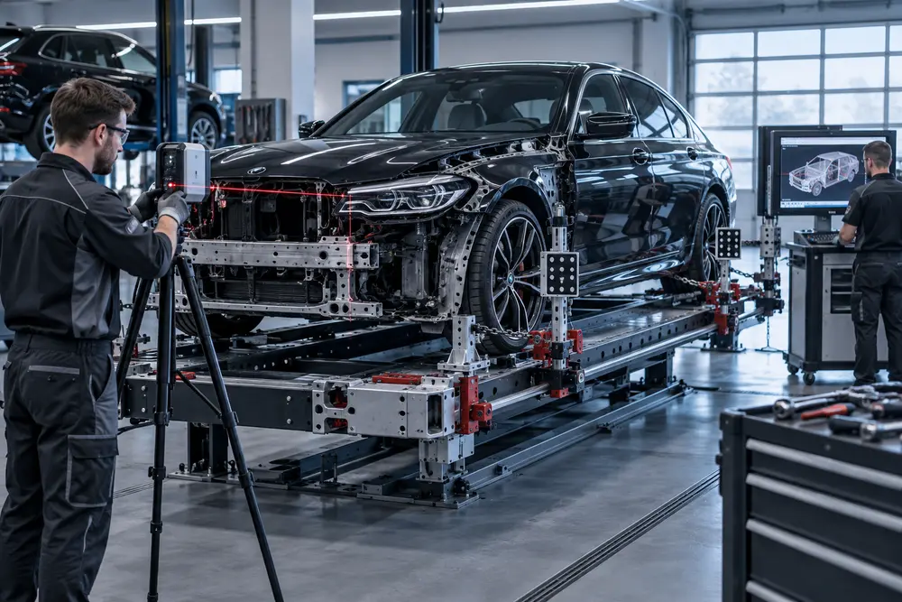
Fachgerechtes Richten, Ausbeulen und Instandsetzen – vom kleinen Schaden bis zur Strukturreparatur.
Mehr erfahren →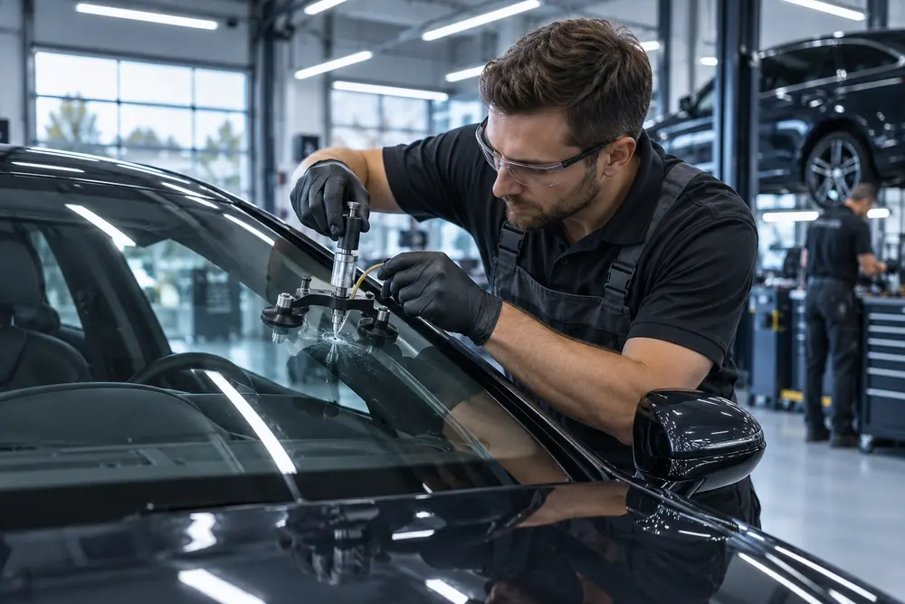
Professionelle Reparatur und Austausch beschädigter Fahrzeugscheiben.
Mehr erfahren →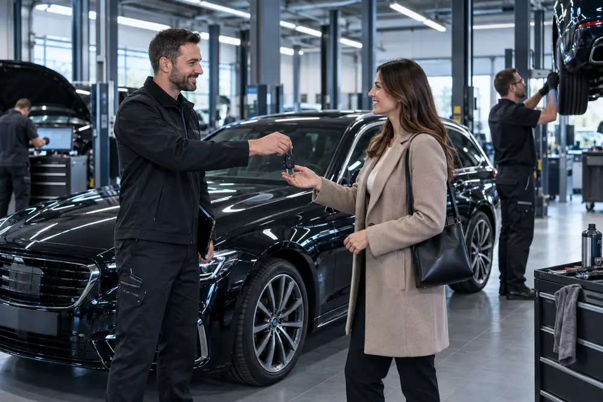
Abschleppdienst, Leihwagen, Abhol- und Bringservice sowie sichere Stellplätze.
Mehr erfahren →Mehr als Lackiererei
Unsere Werkstatt in Ergolding bei Landshut ist Ihr Ansprechpartner für Fahrzeuglackierung, Unfallinstandsetzung, Karosseriearbeiten, Wartung und Autoreparatur. Wir betreuen Privat- und Geschäftskunden aus Landshut, München und Umgebung – mit einem Ansprechpartner für alle Arbeiten.
Werkstatt-Termin anfragen ↗Unser Leistungsspektrum reicht über das Automobil hinaus: Wir bieten auch die Lackierung kleiner Flugzeuge und Yachten an. Umfang, Ausführung und Terminplanung besprechen wir persönlich anhand Ihres Projekts.
Flugzeuglackierung
Ein gepflegtes Erscheinungsbild beginnt mit einer präzisen Lackierung. Sprechen Sie mit uns über die gewünschte Farbe und den Umfang der Arbeiten an Ihrem kleinen Flugzeug.
Flugzeuglackierung anfragen ↗Yachtlackierung
Eine hochwertige Lackierung unterstreicht die Linien Ihrer Yacht. Wir besprechen Ihre Vorstellungen und die passende Ausführung individuell – von der Farbgestaltung bis zur Projektplanung.
Yachtlackierung anfragen ↗Sicher. Ruhig. Perfekt in der Spur.
Reifen und Felgen entscheiden bei jeder Fahrt über Grip, Laufruhe und Bremsweg. Wir kümmern uns professionell um Ihre Räder – präzise, markenunabhängig und ohne unnötige Wartezeiten.
Präzision, die Sie spüren
Schluss mit Lenkradvibrationen und unruhigem Fahrverhalten. Wir erkennen selbst kleinste Unwuchten und sorgen für ruhigen Lauf, gleichmäßigen Reifenverschleiß und spürbar mehr Fahrkomfort.
Platz sparen. Zeit gewinnen.
Ihre Saisonräder lagern bei uns sauber, trocken und fachgerecht. Vor dem nächsten Wechsel prüfen wir Zustand, Profiltiefe und Reifendruck – damit Sie entspannt in die neue Saison starten.
Millimetergenau statt ungefähr
Moderne Messtechnik lokalisiert Gewichtsabweichungen exakt. Das schützt Fahrwerk und Reifen, reduziert Vibrationen und bringt Ihr Fahrzeug wieder souverän und ruhig auf die Straße.
Zuverlässig für Ihren Fuhrpark
Planbare Termine, kurze Standzeiten und ein fester Ansprechpartner: Wir halten Firmenfahrzeuge und Flotten zuverlässig mobil – effizient organisiert und transparent dokumentiert.
Kompetenz für alle Marken
Ob Kleinwagen, Premiumfahrzeug, Transporter oder Firmenflotte: Unser Service richtet sich nach Ihrem Fahrzeug – nicht nach dem Markenlogo auf der Motorhaube.
Erhalten statt vorschnell ersetzen
Kratzer und optische Schäden müssen nicht gleich eine neue Felge bedeuten. Wir prüfen fachgerecht, bereiten professionell auf und geben Ihrer Felge ihren gepflegten Auftritt zurück.
Zeigen Sie uns den Schaden. Wir prüfen schnell und ehrlich, welche Reparatur sinnvoll ist – und erstellen Ihnen eine klare Einschätzung.
Felgenschaden anfragen ↗Der Unterschied im Detail
Wir verbinden Erfahrung mit moderner Werkstatttechnik. Dabei zählen für uns nicht nur perfekte Oberflächen, sondern auch transparente Beratung, verlässliche Termine und eine Lösung, die zum Wert Ihres Fahrzeugs passt.
Kurze Wege, klare Aussagen und ein Ansprechpartner vom ersten Blick bis zur Übergabe.
Rufen Sie uns an oder kommen Sie direkt in Ergolding vorbei.
Wir prüfen den Schaden und besprechen transparent die passende Lösung.
Wir reparieren fachgerecht und übergeben Ihr Fahrzeug termingerecht.
Wir sind für Sie da
Eine erste Einschätzung beginnt mit einem kurzen Gespräch. Rufen Sie uns an oder schreiben Sie uns eine E‑Mail.